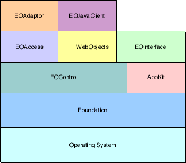
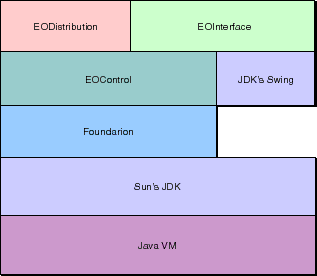

PATH
WebObjects 4.0 Documentation >
EOF Developer's Guide
 Table of Contents
Table of Contents  Previous Section
Previous Section
Framework Dependencies
The architectural depictions of Enterprise Objects Framework in the previous sections present the ordering of the Framework components in terms of the conceptual data flow in the system. Another way to look at Enterprise Objects Framework is in terms of the structural dependencies of the components on one another.
Figure 19 shows the relationships between the Framework's Objective-C frameworks (and also for the corresponding Java versions).

Figure 19. Objective-C Framework Dependencies
The control layer is the lowest layer in the Framework. It can be thought of as an extension of Foundation in that it defines generic core functionality, such as key-value access and object change notification. The control layer centers around EOEditingContext, a subclass of EOObjectStore that manages enterprise objects in memory.
The access layer extends the control layer by implementing an EOObjectStore for relational databases, EODatabaseContext. WebObjects framework too depends on EOControl, because it provides an EOEditingContext with each WOSession object.
The interface layer extends the control layer and the Application Kit by adding bindings between enterprise objects and the user interface. This keeps the values of enterprise objects in sync with their display in the user interface.
Each concrete adaptor (ODBCAdaptor and OracleAdaptor, for example) extends the access layer by implementing concrete subclasses of the access layer's adaptor level classes (EOAdaptor, EOAdaptorContext, and EOAdaptorChannel).
Finally, the server-side EOJavaClient framework extends WebObjects by providing a WOComponent for displaying Java interfaces.
Figure 20 shows the relationships between the Framework's pure Java packages (for writing Java client applications).

Figure 20. Java Package Dependencies
Again the control layer is the lowest layer in the Framework. The interface layer extends the control layer and Swing (the presentation layer of Sun's JDK). Finally, the distribution layer extends the control layer by implementing an EOObjectStore for communicating to an application server through a channel.
Table of Contents  Next Section
Next Section